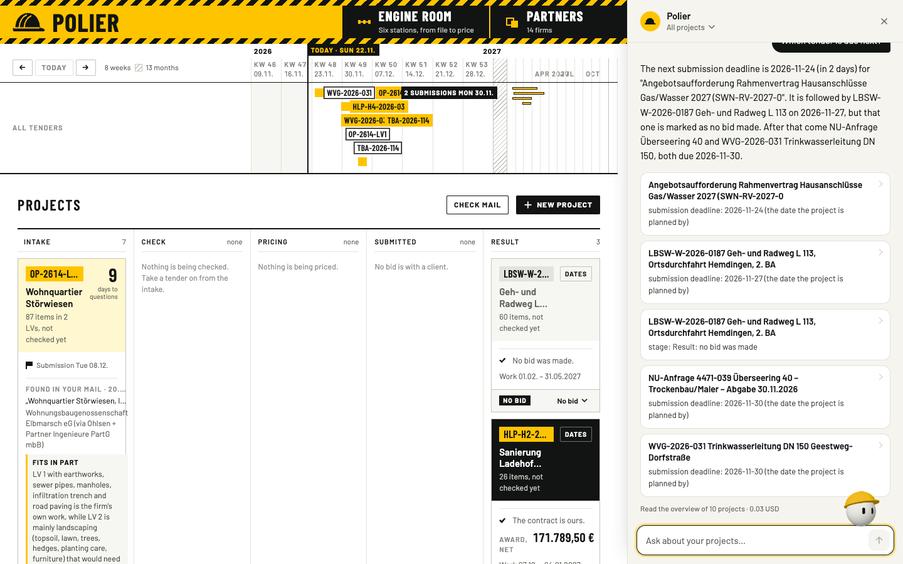
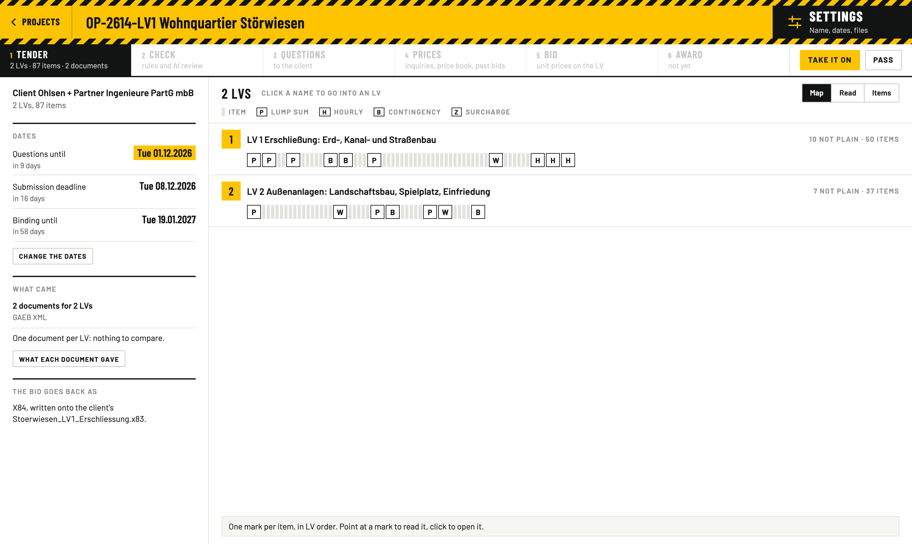

PolierAnswers from the documents, with the passage
Asking about2 documents
PolierOP-2614-LV1 Wohnquartier Störwiesen · 2 documents
PolierOP-2614-LV1 Wohnquartier Störwiesen · 2 documents
Polierfrom 2 documents, with the passage